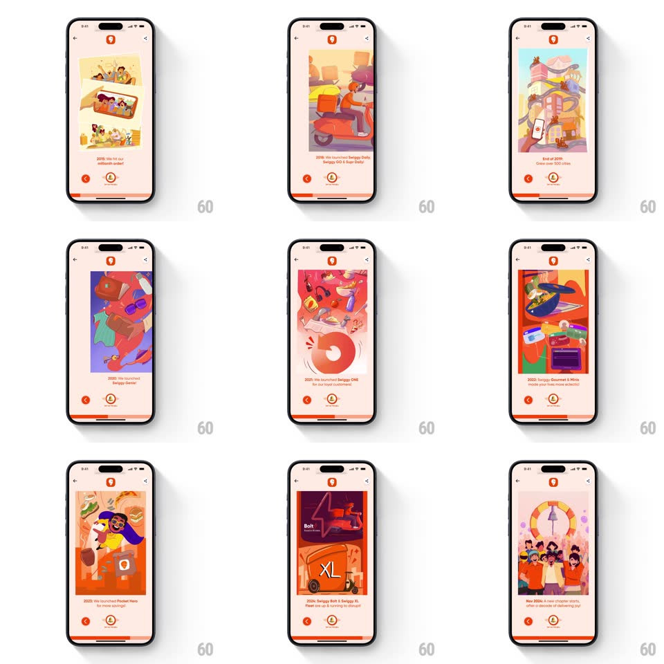

Media
Frame-by-frame

Rebuild this interaction 1:1: Swiggy's IPO story - a vertical timeline of illustrated milestone cards ("The birth of Swiggy!", "We hit our millionth order!") where tapping the bell button card-slides to the next milestone, with a progress bar tracking the journey.

Rebuild this interaction 1:1: Swiggy's IPO story - a vertical timeline of illustrated milestone cards ("The birth of Swiggy!", "We hit our millionth order!") where tapping the bell button card-slides to the next milestone, with a progress bar tracking the journey.
## Integration
Integration: stack-agnostic spec - springs given as stiffness/damping, timed motions as duration + curve; map every value to your framework and animation library of choice.
## Scene
A cream story page (Swiggy logo top-center, back chevron top-left, share top-right). Each card is a full-bleed illustration with a caption: "7th August, 2014 The birth of Swiggy!", "2018: We hit our millionth order!", "2018: We launched Swiggy Daily", "August, 2020: The birth of Instamart!", "2020: We launched Swiggy Genie", "2022: Dineout became a part of the Swiggy universe", "2023: We launched Pocket Hero", "2024: Bolt, Swiggy XL Fleet". Bottom controls: red circular back arrow left, bell button center, thin orange progress bar at the very bottom.
## Motion spec
Pattern: tap-driven story pagination.
- Tap the bell: it rings (rotate -18deg -> 14deg -> 0, 300ms) and the current card slides up and out while the next card slides up from below (300ms, ease-out, cards passing with a slight scale-down on the exiting one).
- The caption text (date + line) staggers in after the card lands: date first, line 100ms later (fade + translateY 10pt).
- The progress bar fills left-to-right proportionally to the milestone index (animated 300ms per step).
- Back arrow steps to the previous card with the reverse slide (cards move down).
- The illustrations have a light internal parallax on entry (foreground elements lag the card by ~60ms).
## Calibration
- Card transition is one direction per intent: up = forward, down = back - never horizontal.
- The bell ring fires before the slide starts - cause, then effect.
## Reduced motion
Cards crossfade; progress bar steps instantly; no bell ring.
## Don't miss
- The bell is the only forward control - it stays center-bottom and pulses gently (scale 1 -> 1.06, 2s) when idle for >3s.
- Last milestone swaps the bell for the confetti/IPO finale state.